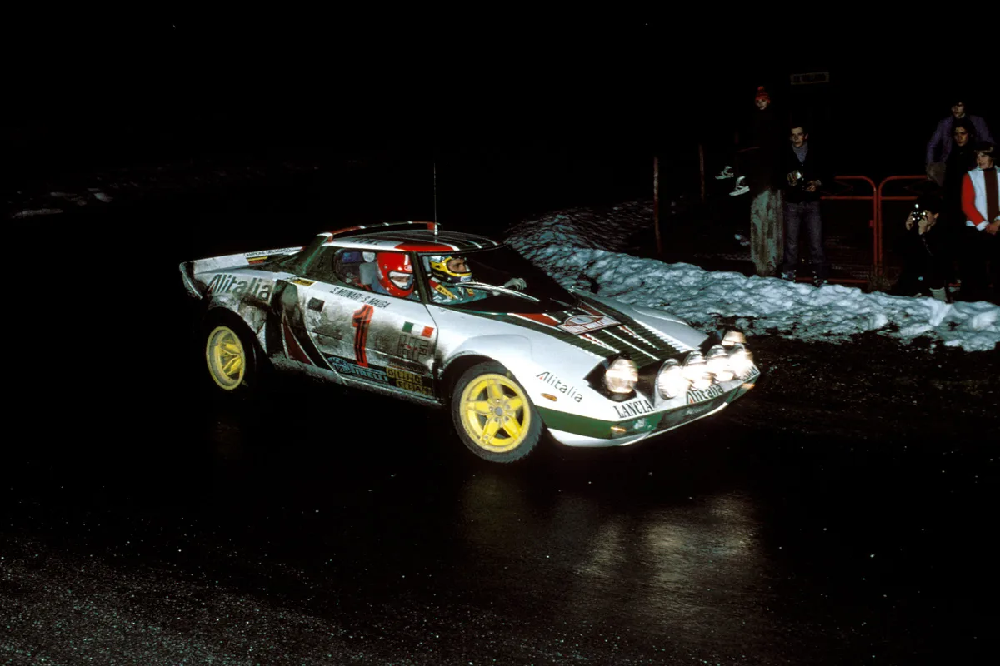
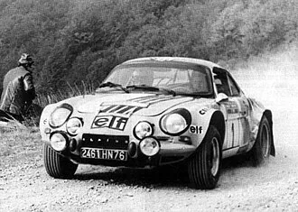
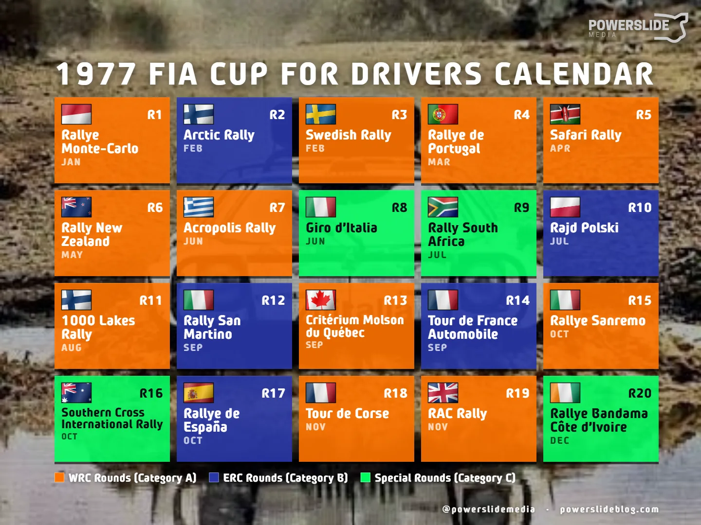
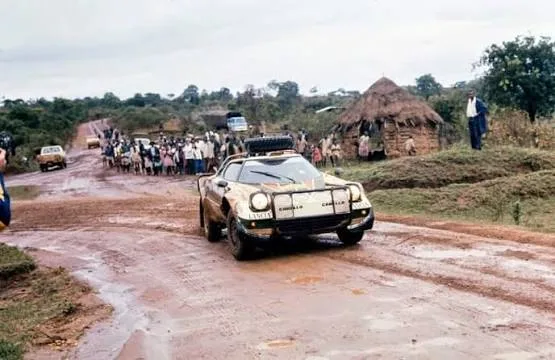
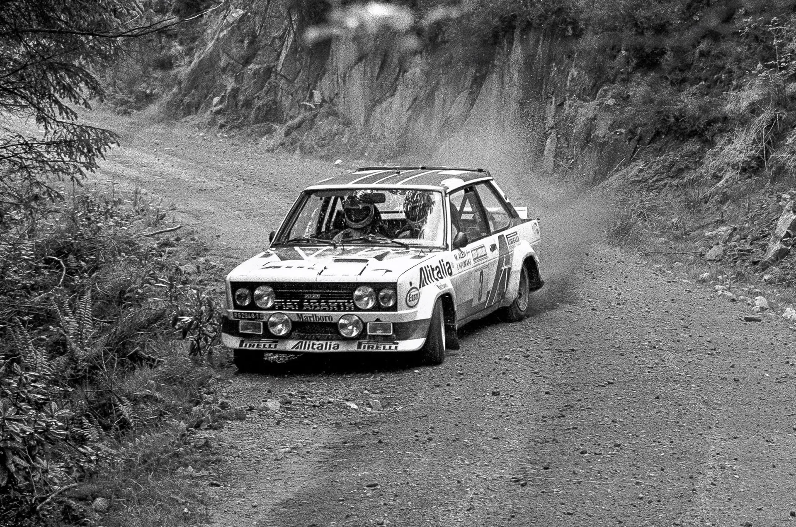

The Bizarre Story of the FIA Cup for Drivers
The WRC had its inaugural season more than 50 years ago in 1973. Despite that, for the first six seasons, there was no championship for drivers. The only titles that were awarded by the motorsports governing body were for Manufacturers and Manufacturers alone. That led to some great drivers of the 70s not receiving the recognition that they deserved. Take Jean-Luc Thérier for example. The Frenchman was part of Alpine’s “Three Musketeers” lineup alongside Jean-Claude Andruet and Jean-Pierre Nicolas, and was instrumental to the team’s success in 1973, winning three rallies, helping Alpine to win the inaugural WRC manufacturers’ title. The Frenchman would have dominated the season in the drivers’ standings with 72 points, having a gap worth more than a win compared to Timo Mäkinen and Achim Warmbold, who had 40 each.

Wikimedia Commons
Drivers and publications had been campaigning for the creation of a Drivers’ Championship for quite some time, correctly stating that it would help the championship grow, as it would have a far greater impact than the makes’ trophy. It’s worth mentioning that many of the major motorsport series at the time awarded a driver's title, including Formula 1.
The CSI, the FIA's commission, had refused to create such a competition for years. Even before the WRC, the International Championship for Manufacturers only awarded a team's title. Manufacturers themselves were not overly enthusiastic with the idea of a Drivers’ Championship, as they believed it would take the spotlight away from the brand and put it to the drivers instead, thus devaluing their wins.
| Season | Manufacturers Champion | Unofficial Drivers Champion |
|---|---|---|
| 1973 | Alpine-Renault | Jean-Luc Thérier |
| 1974 | Lancia | Sandro Munari |
| 1975 | Lancia | Hannu Mikkola |
| 1976 | Lancia | Sandro Munari |
In October 1976, the CSI announced that they’d be creating a Cup for Drivers for the 1977 WRC season. At the time, this was seen as nothing more than a measure to appease the drivers and everyone who was pushing for a full Drivers’ Championship at the time. The cup’s composition was very different to what we see nowadays.
The events counting towards the FIA Cup for Drivers’ in 1977 were split into three categories. Category A included all 11 events in the 1977 WRC calendar, with Category B having all rounds of the European Rally Championship with the highest co-efficient.
Those five rounds were the Arctic Rally in Lapland, Rally Poland, the Tour de France Rally, that used stages from Monte-Carlo as well as stages in circuits in France, Rally San Martino and Rally de España, which was a mixed surface event based in Jarama. Category C was four “special events”.
These were the Giro d’Italia, using stages in the mountains as well as in circuits, Rally South Africa, the Southern Cross Rally which was based in Sydney, Australia, and the Bandama Rallye, in the Ivory Coast. The way the points would be added up, was complex.
The five best results from the WRC rounds (Category A) would count towards the Drivers’ Cup, the two best from the ERC (Category B) as well as the best of the special rounds would make up for a drivers’ total points tally. A driver with no Category B rally had to deduct his best Category A result from his total. Long story short - out of the 20 rallies in the elongated calendar, 8 would ultimately decide the winner.

The inaugural edition of the Drivers’ Cup was won by Sandro Munari in the Lancia Stratos. The Italian had been the team’s leading driver in all seasons before, and would have likely won the 1974 and 1976 title if the championship was in place. The season itself was highly problematic though. Firstly, the overly complicated calendar structure and points system, put off many drivers and fans, which led to the cup being an afterthought. Secondly, some of the additional Category B and C rallies clashed with WRC rounds! South Africa and Poland overlapped, as did Quebec and the Tour de France.
The outcome of the championship would be decided after the end of the season. Jan Hettema had finished ahead of Munari in the South Africa Rally, but was later disqualified for speeding in a road section. That decision ultimately gave Munari the title, just one point ahead of Björn Waldegård. Waldegård didnt compete in any Category B events, as Ford didn’t compete in any ERC rounds that season, thus losing the points from his Safari win. In any sane points system, the Swede would have been champion that year.

For 1978, there weren’t many changes to the system. Rally New Zealand and the Bandama Rallye effectively switched places, with the African round replacing the antipodean round, as the organisers were not willing to cover part of the travel expenses for the teams. Rally South Africa and Rally San Martino were dropped, with Rally Scotland added in its place.
Thankfully, the season was a much more straightforward compared to 1977. Markku Alén dominated the series, winning three WRC rounds + Giro d’Italia whereas Jean-Pierre Nicolas, who won three rounds but retired in three others was more than two wins back in the overall points standings, even after dropped scores were accounted for. Alén would have won the title even if all of the Category B and C rallies were removed.

Following the conclusion of the 1978 WRC season, the FIA, under new leadership with Jean-Marie Balestre, would finally get rid of the convoluted Cup for Drivers and create the WRC Drivers’ Championship. Björn Waldegård would win the championship in 1979, becoming the first WRC Drivers’ Champion.
So what is the legacy of the FIA Cup for Rally Drivers? Well honestly, its been mostly forgotten. Many see no real difference between that and the current WRC Drivers Championship, which leads to Sandro Munari being erroneously labeled as the first WRC champion, something that is untrue. In hindsight, it does make sense that something so short and honestly complex and bizarre would be an afterthought in the history of the WRC.


Comments